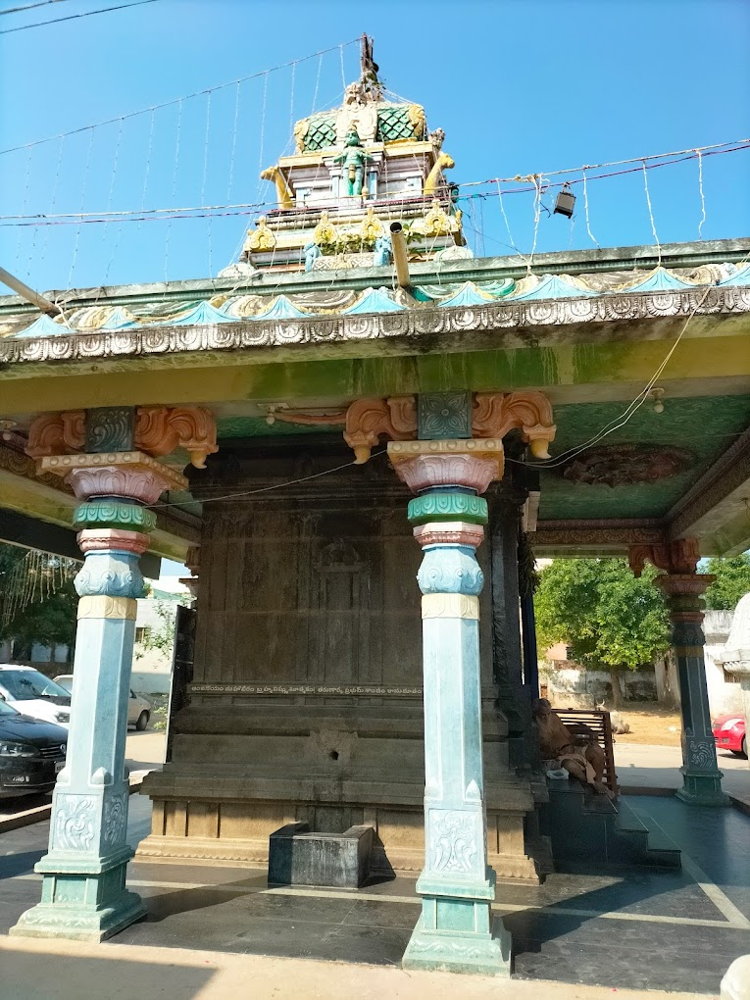

Sri Venugopala Swamy Temple

Temple Name: Sri Venugopala Swamy Temple
History: There are many famous temples of ancient history in Nellore town and district. One of them is the Sri Venugopala Swamy Temple situated in the local Mulapeta. It seems that this temple was built by Kirti Seshulu Ghantabattula Papi Reddy Garu in 1883. Over the course of time, many devotees have contributed greatly to the development of the temple. It is very close to the famous Mulasthaneswara Swamy Temple in Mulapet.
Maps